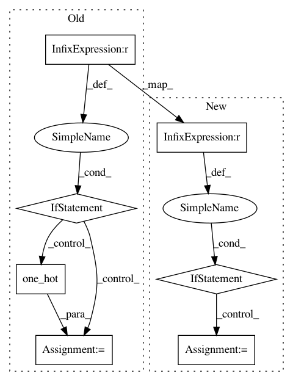

14f0a88cc84dbb29cb2f2eb6e502dc82a77b0714,finetune/network_modules.py,,sequence_labeler,#Any#Any#Any#Any#Any#Any#Any#,243
Before Change
log_likelihood = tf.constant(0.)
class_weights = kwargs.get("class_weights")
if class_weights is not None:
flat_loss = tf.reshape(log_likelihood, [-1, n_targets])
flat_targets = tf.reshape(targets, [-1])
one_hot_targets = tf.one_hot(flat_targets, depth=n_targets)
log_likelihood = _apply_class_weight(flat_loss, one_hot_targets, class_weights)
return {
"logits": logits,
"losses": -log_likelihood,
"predict_params": {
After Change
transition_params = tf.get_variable("Transition_matrix", shape=[n_targets, n_targets])
class_weights = kwargs.get("class_weights")
if class_weights is not None:
logits = class_reweighting(class_weights)(logits)
if train:
log_likelihood, _ = crf_log_likelihood(
logits,
targets,
In pattern: SUPERPATTERN
Frequency: 3
Non-data size: 7
Instances
Project Name: IndicoDataSolutions/finetune
Commit Name: 14f0a88cc84dbb29cb2f2eb6e502dc82a77b0714
Time: 2018-08-30
Author: madison@indico.io
File Name: finetune/network_modules.py
Class Name:
Method Name: sequence_labeler
Project Name: tensorflow/cleverhans
Commit Name: c29b38a31956222003e14d6e968b5e74666c46ae
Time: 2019-04-11
Author: haojie.d.yuan@gmail.com
File Name: cleverhans/attacks/lbfgs.py
Class Name: LBFGS
Method Name: generate
Project Name: reinforceio/tensorforce
Commit Name: ee4c7b9cb7bf13f7c4a39c97718df6a02ca89b5b
Time: 2019-09-24
Author: alexkuhnle@t-online.de
File Name: tensorforce/core/distributions/categorical.py
Class Name: Categorical
Method Name: tf_action_value